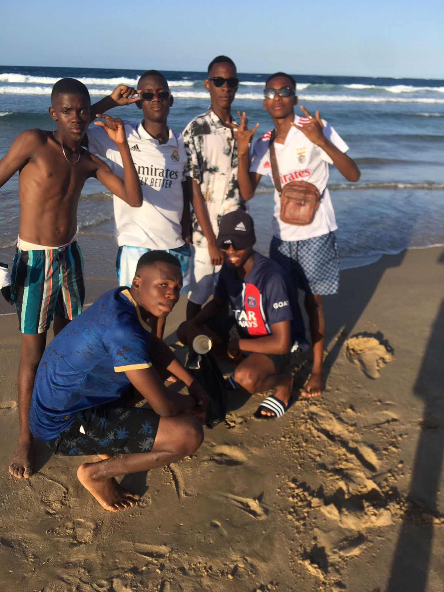
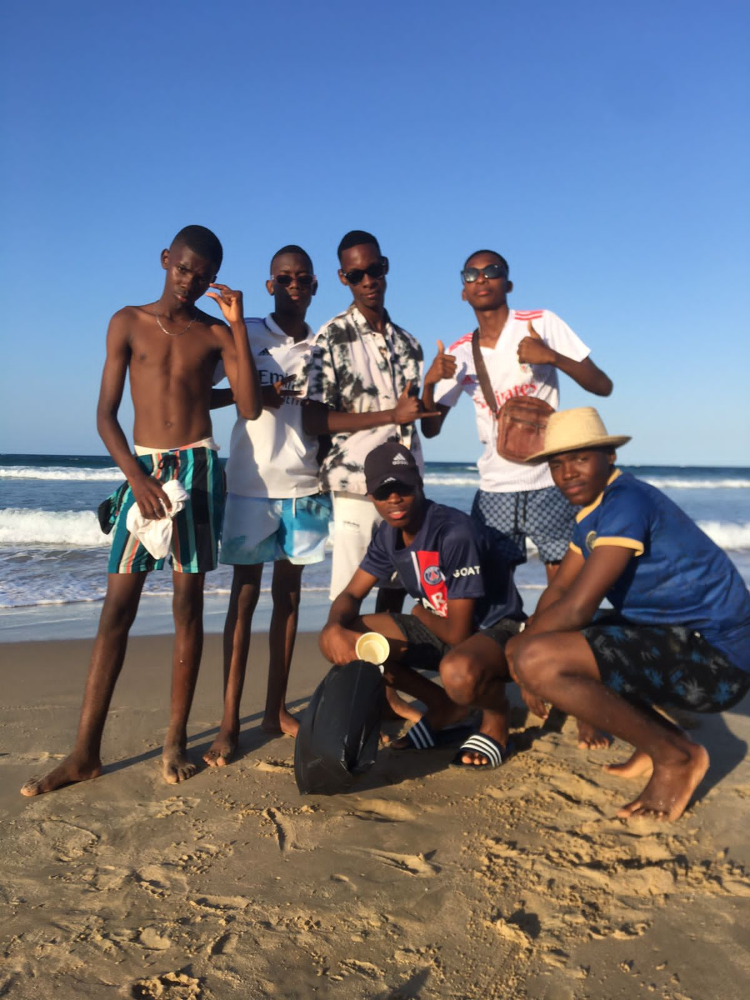

Callers foi um grupo de amigos que, desde o primeiro dia de aula, se destacava por sua presença marcante nos corredores da escola. Eles não eram populares pelos melhores motivos, mas todos os conheciam. Dominavam o ambiente escolar com uma mistura de carisma e irreverência, desafiando as regras a cada oportunidade. Cada professor que cruzava o caminho deles sabia que enfrentaria um verdadeiro desafio.
Com respostas afiadas e uma habilidade incomum de manipular situações ao seu favor, esse grupo parecia ter um talento especial para transformar qualquer aula em um caos controlado. Seus nomes estavam frequentemente no topo da lista de advertências, e, apesar das constantes broncas, eles mantinham um controle absoluto sobre o que acontecia ao seu redor.
Embora fossem o terror de cada professor, era difícil negar o magnetismo do grupo. Outros alunos os seguiam, seja por medo ou por admiração, e poucos ousavam enfrentá-los. Cada aula se tornava um palco para suas provocações, e ninguém escapava de suas brincadeiras astutas e provocações ousadas.
